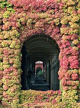
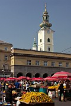
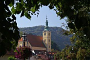
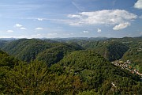
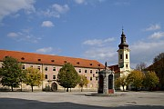
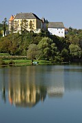
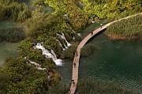
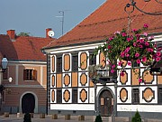
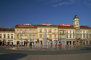
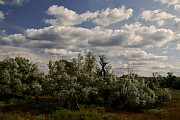

Disclaimer: These pages are not actively maintained, and some of the practical information on the site is out of date. I am working on a new version of the site that will focus more on my photos and memories of travel in Southeast Europe, and less on practical details that too easily become obsolete. In the meantime, please treat the information here with caution.

Zagreb Cathedral

Mirogoj Cemetery

Dolac Market

Samobor

Samoborsko Gorje

Trg Bana Jelačića, Karlovac

River Kupa, Ozalj

Plitvice Lakes

Plitvice Lakes

Varaždin

Osijek

Kopački Rit
More photos in the
Croatia Galleries
Inland Croatia
Zagreb, Croatia's capital, is often overlooked by tourists. It may lack the immediate appeal of the Adriatic Coast, but the strong contrast with the coastal towns is reason enough to include it in a tour of Croatia: the Mediterranean feels very far away in this solidly Central European city. Within easy reach of Zagreb is the lovely baroque architecture of tranquil Varaždin. Between Zagreb and the coast, the natural beauty of the Plitvice Lakes National Park is the equal of anything to be found on the Adriatic.
Zagreb
The heart of Zagreb is Trg Bana Jelačića, where the statue of a mounted viceroy watches with raised sword over the comings and goings of the good burghers of Zagreb. To the south is the grid of the 19th century Lower Town (Donji Grad). It's in this part of the city that comparisons to Vienna are unavoidable. But where Vienna has a Ring, Zagreb has a horseshoe, or rather most of a horseshoe. This series of grassy squares emphasises Zagreb's status as a cultural centre, being punctuated by numerous galleries, theatres, and museums (as well as the Botanical Gardens and the train station). Some would say that the elegant Hapsburg-style architecture lacks the grandeur of Vienna; others (including me) would prefer to say that it is less pompous.
North of Trg Bana Jelačića is the Upper Town, Gornji Grad. As you look north the historic hill towns of Gradec and Kaptol are on your left and right respectively. Both can be reached via the steps to Dolac market square, a lively place seven mornings a week. From here Tkalčićeva runs due north, lined with cafes and bars on both sides. Kaptol is traditionally an ecclesiastical centre, and is dominated by the twin-spired Gothic cathedral. The cathedral has been much restored over the years, and indeed was under scaffolding when I visited in 2002 and 2004; I find it most impressive from a distance. Gradec is the home of many government buildings and can seem very quiet at times. At its centre is Zagreb's most kitsch landmark, the heraldic roof of St Mark's Church. You can also reach Gradec from the Lower Town on a toy-like funicular railway.
If like me you are enthralled by atmospheric Central European graveyards, don't miss Mirogoj Cemetery, just north of the centre: it can hold its own against anything to be found in Budapest or Vienna. The highlight is the ivy-covered, cupola-crowned arcade on both sides of the main entrance. Perhaps the most memorable of many striking sculptures is the Milletich family vault, on which Death the Liberator is grimly portrayed as a skeletal female figure. Most of those buried here are Catholics, as you would expect, but it's a non-denominational cemetery and you can also find Orthodox and Jewish symbolism on some of the tombstones.
The small town of Samobor is just far enough away from Zagreb to escape that suburban feeling. At weekends many citizens of Zagreb make their way out here to enjoy the famous cream cakes in cafes around the main square. If you do the same, you can get rid of those calories by walking uphill through the woods to the ruined castle (Stari Grad); trails continue further into the gently rolling hills.
Plitvice Lakes National Park
This national park is located south-west of Zagreb near the main road to Zadar and Split. At its centre is a valley containing a series of 16 lakes. Each lake sits on its own terrace; between each terrace a waterfall has formed as the lake water pours down to the lower level. In contrast to many upland areas near the coast, the valley is covered by dense forest. Indeed it is calcifying vegetation, building up into travertine formations, that creates the waterfalls. It's an ongoing process, as you will see if you look out for the whitening branches of trees that have fallen into the lakes.
The Park is very well organised and you won't need to worry about inadvertently missing something. The National Park authorities have marked out routes of varying length so that you can adapt your itinerary to your available time and energy. There is a network of wooden walkways to bring visitors close to the falls, boats ferry people across one of the bigger lakes, and a dinky road-train shuttles visitors around the park. Although all this risks creating a theme-park atmosphere, it's hard to argue with the intention of ensuring that the falls are accessible to everyone, and it's certainly better than allowing private cars into the park. Despite my reservations, Plitvice ranks high in my personal list of memorable destinations in the Balkans.
It takes a full day of walking to see all the lakes without rushing. Many visitors focus on the largest waterfall, Veliki Slap, and its immediate surroundings. Veliki Slap (the name simply means "Big Waterfall") is certainly impressive - be prepared for a drenching if you walk to the closest viewing platform. But it is rather atypical of the Plitvice waterfalls, as it is formed by a tributary stream entering the valley. The waterfalls between the lakes are lower but more distinctive, often forming complex systems along a wide arc. In many cases the trees add an air of mystery; you can hear the sound of rushing water but are never quite sure when you are going to find yourself gazing at yet another waterfall. The Upper Lakes, furthest from Veliki Slap, are well worth exploring if you have time - they are slightly less dramatic but far more peaceful.
Both the volume of water flowing through the park and the number of visitors are highly variable depending on the time of year. The best chance of combining impressive waterfalls with light crowds is probably in April. But the park is worth visiting at any time. I went there in November and loved it: it was cold and damp but the mist created a wonderful atmosphere of haunting stillness.
Varaždin
If your mental images of Croatia all feature coastal towns with Venetian campaniles perched between emerald seas and grey mountains, head to Varaždin to see someting different. The centre of town is a harmonious collection of Baroque churches and palaces, their pastel colours complemented by a profusion of flowers. A little to the north the whitewashed fortress (Stari Grad) is set in parkland; a short walk to the west brings you to the town's cemetery, where tombstones take second place to lovingly sculpted trees and hedges.
Varaždin also has a museum called the World of Insects. Sadly I can't report on it from personal experience - I prefer more normal tourist activities like wandering around cemeteries. But apparently it's one of the best collections of its kind.
Practicalities
Zagreb's local transport system consists of a good network of trams supplemented by buses. Although the central area is walkable, trams are useful for getting to the bus station and several hotels; bus #106 goes to Mirogoj Cemetery. Buy tickets at kiosks - the daily ticket is convenient and good value.
As the capital of Croatia, Zagreb is naturally well served by transport links to the rest of the country. Ideally one should arrive by rail. The train station building is one of the most imposing in the Balkans (admittedly the competition is weak), and it's easy to imagine Orient Express passengers of the 1920s crossing the square to the grandiose Esplanade Hotel. The bus station is a relatively dull modern building some distance from the centre. While no one could accuse it of being atmospheric, it is clean and well-organised.
As in many capital cities, accommodation costs in Zagreb are much higher than in the rest of the country. This is especially true outside the summer season - as Zagreb's hotels are aimed more at business than tourism there are no off season reductions. The few medium-budget hotels can get booked up, so it's worth reserving in advance.
Plenty of buses go from the main bus station to Samobor. Varaždin is easy to get to, with frequent buses from Zagreb (1.5 hours). There are also quite a few trains, most of which are rather slow. International trains to Hungary and Austria stop here. Everything in the town is within easy strolling distance.
See the FAQ for comments on getting to Plitvice Lakes by public transport. If you don't have a car, this may be the one time in Croatia where you should bite the bullet and shell out for a hotel room (which may mean booking ahead). Accommodation in private rooms is available but not much of it is within walking distance, whereas there are several hotels right at the entrance to the park. If you are visiting Zagreb before the lakes you might want to call at the National Park office near the main station, which provides information about all aspects of the park including accommodation.
What they said about Zagreb and Plitvice...
... Plitvitse Lakes, the most laughing and light-minded of natural prodigies. Here the creative spirit is as far from the normal as at Niagara or the Grand Canyon or the Matterhorn, but it is untouched by the tragic or by terror, it is dedicated solely to gaiety and loveliness.
- Rebecca West, Black Lamb and Grey Falcon, 1941
Zagreb is a city of many intellectuals, writers and poets. In fact it is the most cultured city in Jugoslavia and has been so for a long time. It is also clique-ridden and infested with snobberies. But one soon forgets all this in Zagreb, a handsome town of nostalgic Viennese charm where the people are most amiable and helpful.
- J.A. Cuddon, The Companion Guide to Yugoslavia, 1968
Zagreb is an urban landscape of volume and space arrangement, where color is secondary. The city requires no sunshine to show it off. Clouds are better, and a chilling drizzle is better still.
- Robert Kaplan, Balkan Ghosts, 1993
After the initial impression [in Plitvice] of being almost too looked after has worn off it tends to be replaced by something akin to euphoria - the lakes really are beautiful after all, and you'd have to be very determined not to be impressed by that much moving water. You can even begin to see why people who live in these conditions start believing in water gods.
- Piers Letcher, Croatia - The Bradt Guide, 2003
More photos of Zagreb and inland Croatia in my Croatia Galleries